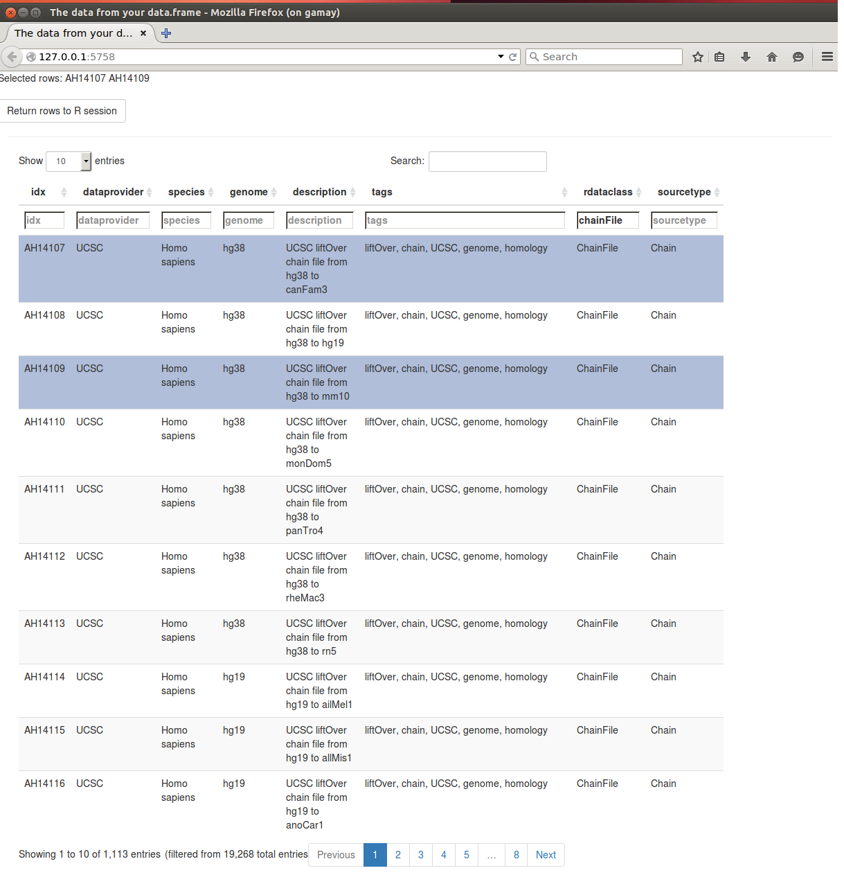

Finding and using public genomics data such as browser or chip-seq tracks; annotation for genes, exons, transcripts; gene ontology and functional gene information; etc. often requires quite a bit of work. Bioconductor has done some of this work already by
The AnnotationHub server provides easy R / Bioconductor access to large collections of publicly available whole genome resources, e.g,. ENSEMBL genome fasta or gtf files, UCSC chain resources, ENCODE data tracks at UCSC, etc.
To get started, make sure that you have the AnnotationHub package installed:
BiocManager::install('AnnotationHub')The AnnotationHub package provides a client interface to resources stored at the AnnotationHub web service.
library(AnnotationHub)The AnnotationHub package is straightforward to use. Create an AnnotationHub object
ah = AnnotationHub()## snapshotDate(): 2022-04-21Now at this point you have already done everything you need in order to start retrieving annotations. For most operations, using the AnnotationHub object should feel a lot like working with a familiar list or data.frame.
Lets take a minute to look at the show method for the hub object ah
ah## AnnotationHub with 64948 records
## # snapshotDate(): 2022-04-21
## # $dataprovider: Ensembl, BroadInstitute, UCSC, ftp://ftp.ncbi.nlm.nih.gov/g...
## # $species: Homo sapiens, Mus musculus, Drosophila melanogaster, Bos taurus,...
## # $rdataclass: GRanges, TwoBitFile, BigWigFile, EnsDb, Rle, OrgDb, ChainFile...
## # additional mcols(): taxonomyid, genome, description,
## # coordinate_1_based, maintainer, rdatadateadded, preparerclass, tags,
## # rdatapath, sourceurl, sourcetype
## # retrieve records with, e.g., 'object[["AH5012"]]'
##
## title
## AH5012 | Chromosome Band
## AH5013 | STS Markers
## AH5014 | FISH Clones
## AH5015 | Recomb Rate
## AH5016 | ENCODE Pilot
## ... ...
## AH104604 | Zonotrichia_albicollis.Zonotrichia_albicollis-1.0.1.ncrna.2bit
## AH104605 | Zosterops_lateralis_melanops.ASM128173v1.cdna.all.2bit
## AH104606 | Zosterops_lateralis_melanops.ASM128173v1.dna_rm.toplevel.2bit
## AH104607 | Zosterops_lateralis_melanops.ASM128173v1.dna_sm.toplevel.2bit
## AH104608 | Zosterops_lateralis_melanops.ASM128173v1.ncrna.2bitYou can see that it gives you an idea about the different types of data that are present inside the hub. You can see where the data is coming from (dataprovider), as well as what species have samples present (species), what kinds of R data objects could be returned (rdataclass). We can take a closer look at all the kinds of data providers that are available by simply looking at the contents of dataprovider as if it were the column of a data.frame object like this:
unique(ah$dataprovider)## [1] "UCSC"
## [2] "Ensembl"
## [3] "RefNet"
## [4] "Inparanoid8"
## [5] "NHLBI"
## [6] "ChEA"
## [7] "Pazar"
## [8] "NIH Pathway Interaction Database"
## [9] "Haemcode"
## [10] "BroadInstitute"
## [11] "PRIDE"
## [12] "Gencode"
## [13] "CRIBI"
## [14] "Genoscope"
## [15] "MISO, VAST-TOOLS, UCSC"
## [16] "UWashington"
## [17] "Stanford"
## [18] "dbSNP"
## [19] "BioMart"
## [20] "GeneOntology"
## [21] "KEGG"
## [22] "URGI"
## [23] "EMBL-EBI"
## [24] "MicrosporidiaDB"
## [25] "FungiDB"
## [26] "TriTrypDB"
## [27] "ToxoDB"
## [28] "AmoebaDB"
## [29] "PlasmoDB"
## [30] "PiroplasmaDB"
## [31] "CryptoDB"
## [32] "TrichDB"
## [33] "GiardiaDB"
## [34] "The Gene Ontology Consortium"
## [35] "ENCODE Project"
## [36] "SchistoDB"
## [37] "NCBI/UniProt"
## [38] "GENCODE"
## [39] "http://www.pantherdb.org"
## [40] "RMBase v2.0"
## [41] "snoRNAdb"
## [42] "tRNAdb"
## [43] "NCBI"
## [44] "DrugAge, DrugBank, Broad Institute"
## [45] "DrugAge"
## [46] "DrugBank"
## [47] "Broad Institute"
## [48] "HMDB, EMBL-EBI, EPA"
## [49] "STRING"
## [50] "OMA"
## [51] "OrthoDB"
## [52] "PathBank"
## [53] "EBI/EMBL"
## [54] "NCBI,DBCLS"
## [55] "FANTOM5,DLRP,IUPHAR,HPRD,STRING,SWISSPROT,TREMBL,ENSEMBL,CELLPHONEDB,BADERLAB,SINGLECELLSIGNALR,HOMOLOGENE"
## [56] "WikiPathways"
## [57] "UCSC Jaspar"
## [58] "VAST-TOOLS"
## [59] "pyGenomeTracks "
## [60] "NA"
## [61] "UoE"
## [62] "mitra.stanford.edu/kundaje/akundaje/release/blacklists/"
## [63] "ENCODE"
## [64] "TargetScan,miRTarBase,USCS,ENSEMBL"
## [65] "TargetScan"
## [66] "QuickGO"
## [67] "ftp://ftp.ncbi.nlm.nih.gov/gene/DATA/"In the same way, you can also see data from different species inside the hub by looking at the contents of species like this:
head(unique(ah$species))## [1] "Homo sapiens" "Vicugna pacos" "Dasypus novemcinctus"
## [4] "Otolemur garnettii" "Papio hamadryas" "Papio anubis"And this will also work for any of the other types of metadata present. You can learn which kinds of metadata are available by simply hitting the tab key after you type ‘ah$’. In this way you can explore for yourself what kinds of data are present in the hub right from the command line. This interface also allows you to access the hub programatically to extract data that matches a particular set of criteria.
Another valuable types of metadata to pay attention to is the rdataclass.
head(unique(ah$rdataclass))## [1] "GRanges" "data.frame" "Inparanoid8Db" "TwoBitFile"
## [5] "ChainFile" "SQLiteConnection"The rdataclass allows you to see which kinds of R objects the hub will return to you. This kind of information is valuable both as a means to filter results and also as a means to explore and learn about some of the kinds of annotation objects that are widely available for the project. Right now this is a pretty short list, but over time it should grow as we support more of the different kinds of annotation objects via the hub.
Now lets try getting the Chain Files from UCSC using the query and subset methods to selectively pare down the hub based on specific criteria. The query method lets you search rows for specific strings, returning an AnnotationHub instance with just the rows matching the query.
From the show method, one can easily see that one of the dataprovider is UCSC and there is a rdataclass for ChainFile
One can get chain files for Drosophila melanogaster from UCSC with:
dm <- query(ah, c("ChainFile", "UCSC", "Drosophila melanogaster"))
dm## AnnotationHub with 45 records
## # snapshotDate(): 2022-04-21
## # $dataprovider: UCSC
## # $species: Drosophila melanogaster
## # $rdataclass: ChainFile
## # additional mcols(): taxonomyid, genome, description,
## # coordinate_1_based, maintainer, rdatadateadded, preparerclass, tags,
## # rdatapath, sourceurl, sourcetype
## # retrieve records with, e.g., 'object[["AH15102"]]'
##
## title
## AH15102 | dm3ToAnoGam1.over.chain.gz
## AH15103 | dm3ToApiMel3.over.chain.gz
## AH15104 | dm3ToDm2.over.chain.gz
## AH15105 | dm3ToDm6.over.chain.gz
## AH15106 | dm3ToDp3.over.chain.gz
## ... ...
## AH15142 | dm2ToDroVir3.over.chain.gz
## AH15143 | dm2ToDroWil1.over.chain.gz
## AH15144 | dm2ToDroYak1.over.chain.gz
## AH15145 | dm2ToDroYak2.over.chain.gz
## AH15146 | dm1ToDm2.over.chain.gzQuery has worked and you can now see that the only species present is Drosophila melanogaster.
The metadata underlying this hub object can be retrieved by you
df <- mcols(dm)
# what is df?
class(df)## [1] "DFrame"
## attr(,"package")
## [1] "S4Vectors"head(df[,1:5])## DataFrame with 6 rows and 5 columns
## title dataprovider species taxonomyid
## <character> <character> <character> <integer>
## AH15102 dm3ToAnoGam1.over.ch.. UCSC Drosophila melanogas.. 7227
## AH15103 dm3ToApiMel3.over.ch.. UCSC Drosophila melanogas.. 7227
## AH15104 dm3ToDm2.over.chain.gz UCSC Drosophila melanogas.. 7227
## AH15105 dm3ToDm6.over.chain.gz UCSC Drosophila melanogas.. 7227
## AH15106 dm3ToDp3.over.chain.gz UCSC Drosophila melanogas.. 7227
## AH15107 dm3ToDp4.over.chain.gz UCSC Drosophila melanogas.. 7227
## genome
## <character>
## AH15102 dm3
## AH15103 dm3
## AH15104 dm3
## AH15105 dm3
## AH15106 dm3
## AH15107 dm3By default the show method will only display the first 5 and last 5 rows. There are already thousands of records present in the hub.
length(ah)## [1] 64948Lets look at another example, where we pull down only Inparanoid8 data from the hub and use subset to return a smaller base object (here we are finding cases where the genome column is set to panda).
ahs <- query(ah, c('inparanoid8', 'ailuropoda'))
ahs## AnnotationHub with 1 record
## # snapshotDate(): 2022-04-21
## # names(): AH10451
## # $dataprovider: Inparanoid8
## # $species: Ailuropoda melanoleuca
## # $rdataclass: Inparanoid8Db
## # $rdatadateadded: 2014-03-31
## # $title: hom.Ailuropoda_melanoleuca.inp8.sqlite
## # $description: Inparanoid 8 annotations about Ailuropoda melanoleuca
## # $taxonomyid: 9646
## # $genome: inparanoid8 genomes
## # $sourcetype: Inparanoid
## # $sourceurl: http://inparanoid.sbc.su.se/download/current/Orthologs/A.melan...
## # $sourcesize: NA
## # $tags: c("Inparanoid", "Gene", "Homology", "Annotation")
## # retrieve record with 'object[["AH10451"]]'We can also look at the AnnotationHub object in a browser using the display() function. We can then filter the AnnotationHub object for _chainFile__ by either using the Global search field on the top right corner of the page or the in-column search field for `rdataclass’.
d <- display(ah) Displaying and filtering the Annotation Hub object in a browser
By default 1000 entries are displayed per page, we can change this using the filter on the top of the page or navigate through different pages using the page scrolling feature at the bottom of the page.
We can also select the rows of interest to us and send them back to the R session using ‘Return rows to R session’ button ; this sets a filter internally which filters the AnnotationHub object. The names of the selected AnnotationHub elements displayed at the top of the page.
AnnotationHub to retrieve dataLooking back at our chain file example, if we are interested in the file dm1ToDm2.over.chain.gz, we can gets its metadata using
dm## AnnotationHub with 45 records
## # snapshotDate(): 2022-04-21
## # $dataprovider: UCSC
## # $species: Drosophila melanogaster
## # $rdataclass: ChainFile
## # additional mcols(): taxonomyid, genome, description,
## # coordinate_1_based, maintainer, rdatadateadded, preparerclass, tags,
## # rdatapath, sourceurl, sourcetype
## # retrieve records with, e.g., 'object[["AH15102"]]'
##
## title
## AH15102 | dm3ToAnoGam1.over.chain.gz
## AH15103 | dm3ToApiMel3.over.chain.gz
## AH15104 | dm3ToDm2.over.chain.gz
## AH15105 | dm3ToDm6.over.chain.gz
## AH15106 | dm3ToDp3.over.chain.gz
## ... ...
## AH15142 | dm2ToDroVir3.over.chain.gz
## AH15143 | dm2ToDroWil1.over.chain.gz
## AH15144 | dm2ToDroYak1.over.chain.gz
## AH15145 | dm2ToDroYak2.over.chain.gz
## AH15146 | dm1ToDm2.over.chain.gzdm["AH15146"]## AnnotationHub with 1 record
## # snapshotDate(): 2022-04-21
## # names(): AH15146
## # $dataprovider: UCSC
## # $species: Drosophila melanogaster
## # $rdataclass: ChainFile
## # $rdatadateadded: 2014-12-15
## # $title: dm1ToDm2.over.chain.gz
## # $description: UCSC liftOver chain file from dm1 to dm2
## # $taxonomyid: 7227
## # $genome: dm1
## # $sourcetype: Chain
## # $sourceurl: http://hgdownload.cse.ucsc.edu/goldenpath/dm1/liftOver/dm1ToDm...
## # $sourcesize: NA
## # $tags: c("liftOver", "chain", "UCSC", "genome", "homology")
## # retrieve record with 'object[["AH15146"]]'We can download the file using
dm[["AH15146"]]## loading from cache## require("rtracklayer")## Chain of length 11
## names(11): chr2L chr2R chr3L chr3R chr4 chrX chrU chr2h chr3h chrXh chrYhEach file is retrieved from the AnnotationHub server and the file is also cache locally, so that the next time you need to retrieve it, it should download much more quickly.
Bioconductor offers pre-built org.* annotation packages for model organisms, with their use described in the OrgDb section of the Annotation work flow. Here we discover available OrgDb objects for less-model organisms.
The query() interface allows us to do full-text searching of AnnotationHub objects. How many OrgDb packages are represented in AnnotationHub?
library(AnnotationHub)
## create the annotationhub object
ah <- AnnotationHub()## snapshotDate(): 2022-04-21## Query the annotationhub metadata
query(ah, "OrgDb")## AnnotationHub with 1830 records
## # snapshotDate(): 2022-04-21
## # $dataprovider: ftp://ftp.ncbi.nlm.nih.gov/gene/DATA/
## # $species: Escherichia coli, greater Indian_fruit_bat, Zootoca vivipara, Zo...
## # $rdataclass: OrgDb
## # additional mcols(): taxonomyid, genome, description,
## # coordinate_1_based, maintainer, rdatadateadded, preparerclass, tags,
## # rdatapath, sourceurl, sourcetype
## # retrieve records with, e.g., 'object[["AH100399"]]'
##
## title
## AH100399 | org.Ag.eg.db.sqlite
## AH100400 | org.At.tair.db.sqlite
## AH100401 | org.Bt.eg.db.sqlite
## AH100402 | org.Cf.eg.db.sqlite
## AH100403 | org.Gg.eg.db.sqlite
## ... ...
## AH102596 | org.Lobosporangium_transversale.eg.sqlite
## AH102597 | org.Sulfolobus_acidocaldarius.eg.sqlite
## AH102598 | org.Penicillium_rugulosum.eg.sqlite
## AH102599 | org.Talaromyces_rugulosus.eg.sqlite
## AH102600 | org.Metallosphaera_sedula.eg.sqliteLet’s assume that we are working with yeast (Saccharomyces cerevisiae) and get the OrgDb package.
sub_ah = query(ah, c("OrgDb", "cerevisiae"))
sub_ah## AnnotationHub with 1 record
## # snapshotDate(): 2022-04-21
## # names(): AH100415
## # $dataprovider: ftp://ftp.ncbi.nlm.nih.gov/gene/DATA/
## # $species: Saccharomyces cerevisiae
## # $rdataclass: OrgDb
## # $rdatadateadded: 2022-04-18
## # $title: org.Sc.sgd.db.sqlite
## # $description: NCBI gene ID based annotations about Saccharomyces cerevisiae
## # $taxonomyid: 559292
## # $genome: NCBI genomes
## # $sourcetype: NCBI/ensembl
## # $sourceurl: ftp://ftp.ncbi.nlm.nih.gov/gene/DATA/, ftp://ftp.ensembl.org/p...
## # $sourcesize: NA
## # $tags: c("NCBI", "Gene", "Annotation")
## # retrieve record with 'object[["AH100415"]]'orgdb <- query(sub_ah, "OrgDb")[[1]]## loading from cache## Loading required package: AnnotationDbi## Loading required package: Biobase## Welcome to Bioconductor
##
## Vignettes contain introductory material; view with
## 'browseVignettes()'. To cite Bioconductor, see
## 'citation("Biobase")', and for packages 'citation("pkgname")'.##
## Attaching package: 'Biobase'## The following object is masked from 'package:AnnotationHub':
##
## cacheLook at the orgdb object.
orgdb## OrgDb object:
## | DBSCHEMAVERSION: 2.1
## | Db type: OrgDb
## | Supporting package: AnnotationDbi
## | DBSCHEMA: YEAST_DB
## | ORGANISM: Saccharomyces cerevisiae
## | SPECIES: Yeast
## | YGSOURCENAME: Yeast Genome
## | YGSOURCEURL: http://sgd-archive.yeastgenome.org
## | YGSOURCEDATE: 2019-Oct25
## | CENTRALID: ORF
## | TAXID: 559292
## | KEGGSOURCENAME: KEGG GENOME
## | KEGGSOURCEURL: ftp://ftp.genome.jp/pub/kegg/genomes
## | KEGGSOURCEDATE: 2011-Mar15
## | GOSOURCENAME: Gene Ontology
## | GOSOURCEURL: http://current.geneontology.org/ontology/go-basic.obo
## | GOSOURCEDATE: 2022-03-10
## | EGSOURCEDATE: 2022-Mar17
## | EGSOURCENAME: Entrez Gene
## | EGSOURCEURL: ftp://ftp.ncbi.nlm.nih.gov/gene/DATA
## | ENSOURCEDATE: 2021-Dec21
## | ENSOURCENAME: Ensembl
## | ENSOURCEURL: ftp://ftp.ensembl.org/pub/current_fasta
## | UPSOURCENAME: Uniprot
## | UPSOURCEURL: http://www.UniProt.org/
## | UPSOURCEDATE: Fri Apr 1 15:07:54 2022##
## Please see: help('select') for usage informationThe orgdb object works like a little database. We can look at the columns in the database.
columns(orgdb)## [1] "ALIAS" "COMMON" "DESCRIPTION" "ENSEMBL" "ENSEMBLPROT"
## [6] "ENSEMBLTRANS" "ENTREZID" "ENZYME" "EVIDENCE" "EVIDENCEALL"
## [11] "GENENAME" "GO" "GOALL" "INTERPRO" "ONTOLOGY"
## [16] "ONTOLOGYALL" "ORF" "PATH" "PFAM" "PMID"
## [21] "REFSEQ" "SGD" "SMART" "UNIPROT"Not all columns can always be used for “lookup”, though. We need to know which columns represent keys that we can use to retrieve data.
keytypes(orgdb)## [1] "ALIAS" "COMMON" "DESCRIPTION" "ENSEMBL" "ENSEMBLPROT"
## [6] "ENSEMBLTRANS" "ENTREZID" "ENZYME" "EVIDENCE" "EVIDENCEALL"
## [11] "GENENAME" "GO" "GOALL" "INTERPRO" "ONTOLOGY"
## [16] "ONTOLOGYALL" "ORF" "PATH" "PFAM" "PMID"
## [21] "REFSEQ" "SGD" "SMART" "UNIPROT"You can examine the values available for lookup by using the keys() method.
head(keys(orgdb, keytype="ORF"))## [1] "AIP5" "ARS1001" "ARS1002" "ARS1003" "ARS1004" "ARS1005"head(keys(orgdb, keytype="GO"))## [1] "GO:0003674" "GO:0005199" "GO:0005575" "GO:0009277" "GO:0030437"
## [6] "GO:0031505"Notice that there are two columns that look useful for the derisi data–ORF and GENENAME. Let’s assume that we had not been given the gene name as part of the derisi data, but only the ORF. We can use the OrgDb select() interface to retrieve the gene names for these five ORF ids, just to get a sense of how select() works to get information from an OrgDb object.
orfids = c("YAL001C", "YAL002W", "YAL003W", "YAL004W", "YAL005C")
select(orgdb, keys = orfids, columns = "GENENAME", keytype="ORF")## 'select()' returned 1:1 mapping between keys and columns## ORF SGD GENENAME
## 1 YAL001C S000000001 TFC3
## 2 YAL002W S000000002 VPS8
## 3 YAL003W S000000003 EFB1
## 4 YAL004W S000002136 <NA>
## 5 YAL005C S000000004 SSA1select(orgdb, keys = orfids, columns = "GO", keytype="ORF")## 'select()' returned 1:many mapping between keys and columns## ORF SGD GO EVIDENCE ONTOLOGY
## 1 YAL001C S000000001 GO:0000127 IBA CC
## 2 YAL001C S000000001 GO:0000127 IDA CC
## 3 YAL001C S000000001 GO:0001002 IDA MF
## 4 YAL001C S000000001 GO:0001003 IDA MF
## 5 YAL001C S000000001 GO:0003677 IEA MF
## 6 YAL001C S000000001 GO:0005634 IEA CC
## 7 YAL001C S000000001 GO:0005739 HDA CC
## 8 YAL001C S000000001 GO:0005739 IEA CC
## 9 YAL001C S000000001 GO:0006383 IDA BP
## 10 YAL001C S000000001 GO:0006384 IBA BP
## 11 YAL001C S000000001 GO:0008301 IDA MF
## 12 YAL001C S000000001 GO:0042791 IBA BP
## 13 YAL001C S000000001 GO:0042791 IDA BP
## 14 YAL001C S000000001 GO:0042791 IMP BP
## 15 YAL001C S000000001 GO:0071168 IMP BP
## 16 YAL002W S000000002 GO:0005770 IBA CC
## 17 YAL002W S000000002 GO:0005770 IDA CC
## 18 YAL002W S000000002 GO:0005794 IEA CC
## 19 YAL002W S000000002 GO:0005795 IEA CC
## 20 YAL002W S000000002 GO:0006623 IBA BP
## 21 YAL002W S000000002 GO:0006623 IMP BP
## 22 YAL002W S000000002 GO:0006886 IEA BP
## 23 YAL002W S000000002 GO:0015031 IEA BP
## 24 YAL002W S000000002 GO:0016020 IDA CC
## 25 YAL002W S000000002 GO:0016192 IEA BP
## 26 YAL002W S000000002 GO:0030897 IBA CC
## 27 YAL002W S000000002 GO:0032511 IMP BP
## 28 YAL002W S000000002 GO:0033263 IDA CC
## 29 YAL002W S000000002 GO:0034058 IBA BP
## 30 YAL002W S000000002 GO:0043495 IMP MF
## 31 YAL002W S000000002 GO:0046872 IEA MF
## 32 YAL002W S000000002 GO:0051020 IDA MF
## 33 YAL002W S000000002 GO:0051020 IPI MF
## 34 YAL003W S000000003 GO:0003746 IEA MF
## 35 YAL003W S000000003 GO:0005085 IBA MF
## 36 YAL003W S000000003 GO:0005085 IDA MF
## 37 YAL003W S000000003 GO:0005829 IBA CC
## 38 YAL003W S000000003 GO:0005853 IEA CC
## 39 YAL003W S000000003 GO:0005853 IMP CC
## 40 YAL003W S000000003 GO:0006412 IEA BP
## 41 YAL003W S000000003 GO:0006414 IBA BP
## 42 YAL003W S000000003 GO:0006414 IEA BP
## 43 YAL003W S000000003 GO:0006414 IMP BP
## 44 YAL003W S000000003 GO:0006449 IGI BP
## 45 YAL003W S000000003 GO:0032232 IDA BP
## 46 YAL003W S000000003 GO:1990145 IMP BP
## 47 YAL004W S000002136 <NA> <NA> <NA>
## 48 YAL005C S000000004 GO:0000049 IDA MF
## 49 YAL005C S000000004 GO:0000166 IEA MF
## 50 YAL005C S000000004 GO:0000209 IDA BP
## 51 YAL005C S000000004 GO:0000329 IDA CC
## 52 YAL005C S000000004 GO:0002181 IMP BP
## 53 YAL005C S000000004 GO:0005524 IBA MF
## 54 YAL005C S000000004 GO:0005524 IEA MF
## 55 YAL005C S000000004 GO:0005576 IEA CC
## 56 YAL005C S000000004 GO:0005618 IEA CC
## 57 YAL005C S000000004 GO:0005634 HDA CC
## 58 YAL005C S000000004 GO:0005634 IBA CC
## 59 YAL005C S000000004 GO:0005634 IDA CC
## 60 YAL005C S000000004 GO:0005737 HDA CC
## 61 YAL005C S000000004 GO:0005737 IBA CC
## 62 YAL005C S000000004 GO:0005737 IDA CC
## 63 YAL005C S000000004 GO:0005737 IEA CC
## 64 YAL005C S000000004 GO:0005829 HDA CC
## 65 YAL005C S000000004 GO:0005829 IBA CC
## 66 YAL005C S000000004 GO:0005844 IDA CC
## 67 YAL005C S000000004 GO:0005886 HDA CC
## 68 YAL005C S000000004 GO:0005886 IBA CC
## 69 YAL005C S000000004 GO:0006457 IDA BP
## 70 YAL005C S000000004 GO:0006606 IDA BP
## 71 YAL005C S000000004 GO:0006606 IGI BP
## 72 YAL005C S000000004 GO:0006616 IBA BP
## 73 YAL005C S000000004 GO:0006616 IDA BP
## 74 YAL005C S000000004 GO:0006626 IMP BP
## 75 YAL005C S000000004 GO:0006986 IBA BP
## 76 YAL005C S000000004 GO:0009277 IDA CC
## 77 YAL005C S000000004 GO:0016192 IBA BP
## 78 YAL005C S000000004 GO:0016887 IBA MF
## 79 YAL005C S000000004 GO:0016887 IDA MF
## 80 YAL005C S000000004 GO:0031072 IBA MF
## 81 YAL005C S000000004 GO:0034620 IBA BP
## 82 YAL005C S000000004 GO:0035617 IDA BP
## 83 YAL005C S000000004 GO:0042026 IBA BP
## 84 YAL005C S000000004 GO:0042026 IDA BP
## 85 YAL005C S000000004 GO:0043161 IGI BP
## 86 YAL005C S000000004 GO:0043161 IMP BP
## 87 YAL005C S000000004 GO:0044183 IBA MF
## 88 YAL005C S000000004 GO:0051082 IBA MF
## 89 YAL005C S000000004 GO:0051082 IDA MF
## 90 YAL005C S000000004 GO:0051085 IBA BP
## 91 YAL005C S000000004 GO:0051787 IBA MF
## 92 YAL005C S000000004 GO:0071470 IDA BP
## 93 YAL005C S000000004 GO:0072318 IDA BP
## 94 YAL005C S000000004 GO:0072671 IMP BP
## 95 YAL005C S000000004 GO:0090344 IMP BPExercise: Use the derisi ORF column to look up the associated gene names.
Exercise: Use the derisi ORF column to look up the gene ontology GO annotations for the ORFs. What is the general relationship between GO terms and ORFs?
Bonus Exercise: Read the documentation associated with the GO.db package here. Use the GO.db package and the select interface to look up the descriptions and terms for the gene ontology terms from the previous exercise.
All Roadmap Epigenomics files are hosted here. If one had to download these files on their own, one would navigate through the web interface to find useful files, then use something like the following R code.
url <- "http://egg2.wustl.edu/roadmap/data/byFileType/peaks/consolidated/broadPeak/E001-H3K4me1.broadPeak.gz"
filename <- basename(url)
download.file(url, destfile=filename)
if (file.exists(filename))
data <- import(filename, format="bed")This would have to be repeated for all files, and the onus would lie on the user to identify, download, import, and manage the local disk location of these files.
AnnotationHub reduces this task to just a few lines of R code
library(AnnotationHub)
ah = AnnotationHub()## snapshotDate(): 2022-04-21epiFiles <- query(ah, "EpigenomeRoadMap")A look at the value returned by epiFiles shows us that 18248 roadmap resources are available via AnnotationHub. Additional information about the files is also available, e.g., where the files came from (dataprovider), genome, species, sourceurl, sourcetypes.
epiFiles## AnnotationHub with 18248 records
## # snapshotDate(): 2022-04-21
## # $dataprovider: BroadInstitute
## # $species: Homo sapiens
## # $rdataclass: BigWigFile, GRanges, data.frame
## # additional mcols(): taxonomyid, genome, description,
## # coordinate_1_based, maintainer, rdatadateadded, preparerclass, tags,
## # rdatapath, sourceurl, sourcetype
## # retrieve records with, e.g., 'object[["AH28856"]]'
##
## title
## AH28856 | E001-H3K4me1.broadPeak.gz
## AH28857 | E001-H3K4me3.broadPeak.gz
## AH28858 | E001-H3K9ac.broadPeak.gz
## AH28859 | E001-H3K9me3.broadPeak.gz
## AH28860 | E001-H3K27me3.broadPeak.gz
## ... ...
## AH49540 | E058_mCRF_FractionalMethylation.bigwig
## AH49541 | E059_mCRF_FractionalMethylation.bigwig
## AH49542 | E061_mCRF_FractionalMethylation.bigwig
## AH49543 | E081_mCRF_FractionalMethylation.bigwig
## AH49544 | E082_mCRF_FractionalMethylation.bigwigA good sanity check to ensure that we have files only from the Roadmap Epigenomics project is to check that all the files in the returned smaller hub object come from Homo sapiens and the hg19 genome
unique(epiFiles$species)## [1] "Homo sapiens"unique(epiFiles$genome)## [1] "hg19"Broadly, one can get an idea of the different files from this project looking at the sourcetype
table(epiFiles$sourcetype)##
## BED BigWig GTF tab Zip
## 8298 9932 3 1 14To get a more descriptive idea of these different files one can use:
sort(table(epiFiles$description), decreasing=TRUE)##
## Bigwig File containing -log10(p-value) signal tracks from EpigenomeRoadMap Project
## 6881
## Bigwig File containing fold enrichment signal tracks from EpigenomeRoadMap Project
## 2947
## Narrow ChIP-seq peaks for consolidated epigenomes from EpigenomeRoadMap Project
## 2894
## Broad ChIP-seq peaks for consolidated epigenomes from EpigenomeRoadMap Project
## 2534
## Gapped ChIP-seq peaks for consolidated epigenomes from EpigenomeRoadMap Project
## 2534
## Narrow DNasePeaks for consolidated epigenomes from EpigenomeRoadMap Project
## 131
## 15 state chromatin segmentations from EpigenomeRoadMap Project
## 127
## Broad domains on enrichment for DNase-seq for consolidated epigenomes from EpigenomeRoadMap Project
## 78
## RRBS fractional methylation calls from EpigenomeRoadMap Project
## 51
## Whole genome bisulphite fractional methylation calls from EpigenomeRoadMap Project
## 37
## MeDIP/MRE(mCRF) fractional methylation calls from EpigenomeRoadMap Project
## 16
## GencodeV10 gene/transcript coordinates and annotations corresponding to hg19 version of the human genome
## 3
## RNA-seq read count matrix for intronic protein-coding RNA elements
## 2
## RNA-seq read counts matrix for ribosomal gene exons
## 2
## RPKM expression matrix for ribosomal gene exons
## 2
## Metadata for EpigenomeRoadMap Project
## 1
## RNA-seq read counts matrix for non-coding RNAs
## 1
## RNA-seq read counts matrix for protein coding exons
## 1
## RNA-seq read counts matrix for protein coding genes
## 1
## RNA-seq read counts matrix for ribosomal genes
## 1
## RPKM expression matrix for non-coding RNAs
## 1
## RPKM expression matrix for protein coding exons
## 1
## RPKM expression matrix for protein coding genes
## 1
## RPKM expression matrix for ribosomal RNAs
## 1The ‘metadata’ provided by the Roadmap Epigenomics Project is also available. Note that the information displayed about a hub with a single resource is quite different from the information displayed when the hub references more than one resource.
metadata.tab <- query(ah , c("EpigenomeRoadMap", "Metadata"))
metadata.tab## AnnotationHub with 1 record
## # snapshotDate(): 2022-04-21
## # names(): AH41830
## # $dataprovider: BroadInstitute
## # $species: Homo sapiens
## # $rdataclass: data.frame
## # $rdatadateadded: 2015-05-11
## # $title: EID_metadata.tab
## # $description: Metadata for EpigenomeRoadMap Project
## # $taxonomyid: 9606
## # $genome: hg19
## # $sourcetype: tab
## # $sourceurl: http://egg2.wustl.edu/roadmap/data/byFileType/metadata/EID_met...
## # $sourcesize: 18035
## # $tags: c("EpigenomeRoadMap", "Metadata")
## # retrieve record with 'object[["AH41830"]]'So far we have been exploring information about resources, without downloading the resource to a local cache and importing it into R. One can retrieve the resource using [[ as indicated at the end of the show method
## loading from cachemetadata.tab <- ah[["AH41830"]]## loading from cacheThe metadata.tab file is returned as a data.frame. The first 6 rows of the first 5 columns are shown here:
metadata.tab[1:6, 1:5]## EID GROUP COLOR MNEMONIC
## 1 E001 ESC #924965 ESC.I3
## 2 E002 ESC #924965 ESC.WA7
## 3 E003 ESC #924965 ESC.H1
## 4 E004 ES-deriv #4178AE ESDR.H1.BMP4.MESO
## 5 E005 ES-deriv #4178AE ESDR.H1.BMP4.TROP
## 6 E006 ES-deriv #4178AE ESDR.H1.MSC
## STD_NAME
## 1 ES-I3 Cells
## 2 ES-WA7 Cells
## 3 H1 Cells
## 4 H1 BMP4 Derived Mesendoderm Cultured Cells
## 5 H1 BMP4 Derived Trophoblast Cultured Cells
## 6 H1 Derived Mesenchymal Stem CellsOne can keep constructing different queries using multiple arguments to trim down these 18248 to get the files one wants. For example, to get the ChIP-Seq files for consolidated epigenomes, one could use
bpChipEpi <- query(ah , c("EpigenomeRoadMap", "broadPeak", "chip", "consolidated"))To get all the bigWig signal files, one can query the hub using
allBigWigFiles <- query(ah, c("EpigenomeRoadMap", "BigWig"))To access the 15 state chromatin segmentations, one can use
seg <- query(ah, c("EpigenomeRoadMap", "segmentations"))If one is interested in getting all the files related to one sample
E126 <- query(ah , c("EpigenomeRoadMap", "E126", "H3K4ME2"))
E126## AnnotationHub with 6 records
## # snapshotDate(): 2022-04-21
## # $dataprovider: BroadInstitute
## # $species: Homo sapiens
## # $rdataclass: GRanges, BigWigFile
## # additional mcols(): taxonomyid, genome, description,
## # coordinate_1_based, maintainer, rdatadateadded, preparerclass, tags,
## # rdatapath, sourceurl, sourcetype
## # retrieve records with, e.g., 'object[["AH29817"]]'
##
## title
## AH29817 | E126-H3K4me2.broadPeak.gz
## AH30868 | E126-H3K4me2.narrowPeak.gz
## AH31801 | E126-H3K4me2.gappedPeak.gz
## AH32990 | E126-H3K4me2.fc.signal.bigwig
## AH34022 | E126-H3K4me2.pval.signal.bigwig
## AH40177 | E126-H3K4me2.imputed.pval.signal.bigwigHub resources can also be selected using $, subset(), and display().
Hub resources are imported as the appropriate Bioconductor object for use in further analysis. For example, peak files are returned as GRanges objects.
## loading from cachepeaks <- E126[['AH29817']]## loading from cacheseqinfo(peaks)## Seqinfo object with 298 sequences (2 circular) from hg19 genome:
## seqnames seqlengths isCircular genome
## chr1 249250621 FALSE hg19
## chr2 243199373 FALSE hg19
## chr3 198022430 FALSE hg19
## chr4 191154276 FALSE hg19
## chr5 180915260 FALSE hg19
## ... ... ... ...
## chrUn_gl000245 36651 FALSE hg19
## chrUn_gl000246 38154 FALSE hg19
## chrUn_gl000247 36422 FALSE hg19
## chrUn_gl000248 39786 FALSE hg19
## chrUn_gl000249 38502 FALSE hg19BigWig files are returned as BigWigFile objects. A BigWigFile is a reference to a file on disk; the data in the file can be read in using rtracklayer::import(), perhaps querying these large files for particular genomic regions of interest as described on the help page ?import.bw.
Each record inside AnnotationHub is associated with a unique identifier. Most GRanges objects returned by AnnotationHub contain the unique AnnotationHub identifier of the resource from which the GRanges is derived. This can come handy when working with the GRanges object for a while, and additional information about the object (e.g., the name of the file in the cache, or the original sourceurl for the data underlying the resource) that is being worked with.
metadata(peaks)## $AnnotationHubName
## [1] "AH29817"
##
## $`File Name`
## [1] "E126-H3K4me2.broadPeak.gz"
##
## $`Data Source`
## [1] "http://egg2.wustl.edu/roadmap/data/byFileType/peaks/consolidated/broadPeak/E126-H3K4me2.broadPeak.gz"
##
## $Provider
## [1] "BroadInstitute"
##
## $Organism
## [1] "Homo sapiens"
##
## $`Taxonomy ID`
## [1] 9606ah[metadata(peaks)$AnnotationHubName]$sourceurl## [1] "http://egg2.wustl.edu/roadmap/data/byFileType/peaks/consolidated/broadPeak/E126-H3K4me2.broadPeak.gz"AnnotationHub objectsMost users will not need to do any specific configuration, but this section is included for completeness.
When you create the AnnotationHub object, it will set up the object for you with some default settings. See ?AnnotationHub for ways to customize the hub source, the local cache, and other instance-specific options, and ?getAnnotationHubOption to get or set package-global options for use across sessions.
If you look at the object you will see some helpful information about it such as where the data is cached and where online the hub server is set to.
ah## AnnotationHub with 64948 records
## # snapshotDate(): 2022-04-21
## # $dataprovider: Ensembl, BroadInstitute, UCSC, ftp://ftp.ncbi.nlm.nih.gov/g...
## # $species: Homo sapiens, Mus musculus, Drosophila melanogaster, Bos taurus,...
## # $rdataclass: GRanges, TwoBitFile, BigWigFile, EnsDb, Rle, OrgDb, ChainFile...
## # additional mcols(): taxonomyid, genome, description,
## # coordinate_1_based, maintainer, rdatadateadded, preparerclass, tags,
## # rdatapath, sourceurl, sourcetype
## # retrieve records with, e.g., 'object[["AH5012"]]'
##
## title
## AH5012 | Chromosome Band
## AH5013 | STS Markers
## AH5014 | FISH Clones
## AH5015 | Recomb Rate
## AH5016 | ENCODE Pilot
## ... ...
## AH104604 | Zonotrichia_albicollis.Zonotrichia_albicollis-1.0.1.ncrna.2bit
## AH104605 | Zosterops_lateralis_melanops.ASM128173v1.cdna.all.2bit
## AH104606 | Zosterops_lateralis_melanops.ASM128173v1.dna_rm.toplevel.2bit
## AH104607 | Zosterops_lateralis_melanops.ASM128173v1.dna_sm.toplevel.2bit
## AH104608 | Zosterops_lateralis_melanops.ASM128173v1.ncrna.2bitBy default the AnnotationHub object is set to the latest snapshotData and a snapshot version that matches the version of Bioconductor that you are using. You can also learn about these data with the appropriate methods.
snapshotDate(ah)## [1] "2022-04-21"If you are interested in using an older version of a snapshot, you can list previous versions with the possibleDates() like this:
pd <- possibleDates(ah)
pd## [1] "2013-03-19" "2013-03-21" "2013-03-26" "2013-04-04" "2013-04-29"
## [6] "2013-06-24" "2013-06-25" "2013-06-26" "2013-06-27" "2013-10-29"
## [11] "2013-11-20" "2013-12-19" "2014-02-12" "2014-02-13" "2014-03-31"
## [16] "2014-04-27" "2014-05-11" "2014-05-13" "2014-05-14" "2014-05-22"
## [21] "2014-07-02" "2014-07-09" "2014-12-15" "2014-12-24" "2015-01-08"
## [26] "2015-01-14" "2015-03-09" "2015-03-11" "2015-03-12" "2015-03-25"
## [31] "2015-03-26" "2015-05-06" "2015-05-07" "2015-05-08" "2015-05-11"
## [36] "2015-05-14" "2015-05-21" "2015-05-22" "2015-05-26" "2015-07-17"
## [41] "2015-07-27" "2015-07-31" "2015-08-10" "2015-08-13" "2015-08-14"
## [46] "2015-08-17" "2015-08-26" "2015-12-28" "2015-12-29" "2016-01-25"
## [51] "2016-03-07" "2016-05-03" "2016-05-25" "2016-06-06" "2016-07-20"
## [56] "2016-08-15" "2016-10-11" "2016-11-03" "2016-11-08" "2016-11-09"
## [61] "2016-11-13" "2016-11-14" "2016-12-22" "2016-12-28" "2017-01-05"
## [66] "2017-02-07" "2017-04-03" "2017-04-04" "2017-04-05" "2017-04-10"
## [71] "2017-04-11" "2017-04-13" "2017-04-24" "2017-04-25" "2017-05-31"
## [76] "2017-06-06" "2017-06-07" "2017-06-08" "2017-06-29" "2017-08-28"
## [81] "2017-08-31" "2017-09-07" "2017-10-18" "2017-10-23" "2017-10-24"
## [86] "2017-10-27" "2017-11-24" "2017-10-26" "2017-10-20" "2017-12-21"
## [91] "2018-01-18" "2018-02-20" "2018-04-11" "2018-04-13" "2018-04-16"
## [96] "2018-04-19" "2018-04-20" "2018-04-23" "2018-04-30" "2018-06-27"
## [101] "2018-07-31" "2018-08-01" "2018-08-20" "2018-10-04" "2018-10-11"
## [106] "2018-10-15" "2018-10-16" "2018-10-18" "2018-10-22" "2018-10-24"
## [111] "2018-12-20" "2019-01-14" "2019-02-14" "2019-02-15" "2019-04-15"
## [116] "2019-04-18" "2019-04-22" "2019-04-29" "2019-05-01" "2019-05-02"
## [121] "2019-09-17" "2019-10-08" "2019-10-17" "2019-10-21" "2019-10-22"
## [126] "2019-10-28" "2019-10-29" "2020-01-28" "2020-02-28" "2020-10-14"
## [131] "2020-05-01" "2020-04-27" "2020-05-11" "2020-06-18" "2020-07-20"
## [136] "2020-09-03" "2020-10-20" "2020-10-26" "2020-10-27" "2020-12-16"
## [141] "2021-01-14" "2021-02-24" "2021-04-12" "2021-04-19" "2021-04-30"
## [146] "2021-05-04" "2021-05-14" "2021-05-17" "2021-05-18" "2021-06-15"
## [151] "2021-08-03" "2021-09-10" "2021-09-23" "2021-10-08" "2021-10-13"
## [156] "2021-10-15" "2021-10-18" "2021-10-20" "2022-01-20" "2022-01-31"
## [161] "2022-04-12" "2022-04-18" "2022-04-21"Set the dates like this:
snapshotDate(ah) <- pd[1]sessionInfo()## R version 4.2.0 (2022-04-22)
## Platform: x86_64-apple-darwin17.0 (64-bit)
## Running under: macOS Big Sur/Monterey 10.16
##
## Matrix products: default
## BLAS: /Library/Frameworks/R.framework/Versions/4.2/Resources/lib/libRblas.0.dylib
## LAPACK: /Library/Frameworks/R.framework/Versions/4.2/Resources/lib/libRlapack.dylib
##
## locale:
## [1] en_US.UTF-8/en_US.UTF-8/en_US.UTF-8/C/en_US.UTF-8/en_US.UTF-8
##
## attached base packages:
## [1] stats4 stats graphics grDevices utils datasets methods
## [8] base
##
## other attached packages:
## [1] AnnotationDbi_1.58.0 Biobase_2.56.0 rtracklayer_1.56.0
## [4] GenomicRanges_1.48.0 GenomeInfoDb_1.32.0 IRanges_2.30.0
## [7] S4Vectors_0.34.0 AnnotationHub_3.4.0 BiocFileCache_2.4.0
## [10] dbplyr_2.1.1 BiocGenerics_0.42.0 BiocStyle_2.24.0
##
## loaded via a namespace (and not attached):
## [1] MatrixGenerics_1.8.0 httr_1.4.2
## [3] sass_0.4.1 bit64_4.0.5
## [5] jsonlite_1.8.0 bslib_0.3.1
## [7] shiny_1.7.1 assertthat_0.2.1
## [9] interactiveDisplayBase_1.34.0 BiocManager_1.30.17
## [11] blob_1.2.3 BSgenome_1.64.0
## [13] GenomeInfoDbData_1.2.8 Rsamtools_2.12.0
## [15] yaml_2.3.5 BiocVersion_3.15.2
## [17] lattice_0.20-45 pillar_1.7.0
## [19] RSQLite_2.2.12 glue_1.6.2
## [21] digest_0.6.29 promises_1.2.0.1
## [23] XVector_0.36.0 Matrix_1.4-1
## [25] htmltools_0.5.2 httpuv_1.6.5
## [27] XML_3.99-0.9 pkgconfig_2.0.3
## [29] zlibbioc_1.42.0 purrr_0.3.4
## [31] xtable_1.8-4 later_1.3.0
## [33] BiocParallel_1.30.0 tibble_3.1.6
## [35] KEGGREST_1.36.0 generics_0.1.2
## [37] ellipsis_0.3.2 cachem_1.0.6
## [39] withr_2.5.0 SummarizedExperiment_1.26.0
## [41] cli_3.3.0 magrittr_2.0.3
## [43] crayon_1.5.1 mime_0.12
## [45] memoise_2.0.1 evaluate_0.15
## [47] fansi_1.0.3 tools_4.2.0
## [49] matrixStats_0.62.0 BiocIO_1.6.0
## [51] lifecycle_1.0.1 stringr_1.4.0
## [53] DelayedArray_0.22.0 Biostrings_2.64.0
## [55] compiler_4.2.0 jquerylib_0.1.4
## [57] rlang_1.0.2 grid_4.2.0
## [59] RCurl_1.98-1.6 rjson_0.2.21
## [61] rappdirs_0.3.3 bitops_1.0-7
## [63] rmarkdown_2.14 restfulr_0.0.13
## [65] DBI_1.1.2 curl_4.3.2
## [67] R6_2.5.1 GenomicAlignments_1.32.0
## [69] knitr_1.39 dplyr_1.0.8
## [71] fastmap_1.1.0 bit_4.0.4
## [73] utf8_1.2.2 filelock_1.0.2
## [75] stringi_1.7.6 parallel_4.2.0
## [77] Rcpp_1.0.8.3 vctrs_0.4.1
## [79] png_0.1-7 tidyselect_1.1.2
## [81] xfun_0.30